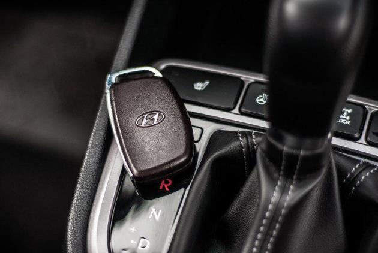
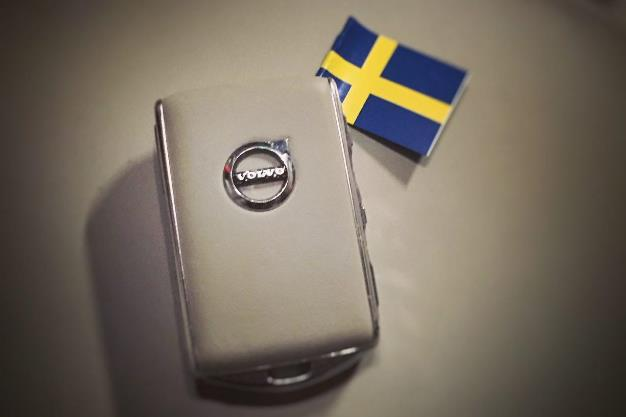

Безопасность! Авто!
Практически любой современный автомобиль открывается и закрывается с помощью электронного ключа — путём нажатия кнопки или даже без этого нехитрого действия (достаточно приблизиться к автомобилю с ключом в кармане). Дистанционный запуск двигателя также давно стал обыденной функцией, доступной даже на относительно недорогих моделях.
Для начала разберёмся, как устроена и работает современная система бесключевого доступа в автомобиль. Для управления системой безопасности применяется радиосигнал, в котором содержится уникальный код. Чип в ключе кодирует данные, которые принимаются системой безопасности вашего автомобиля. Внутри машины находится чип с таким же алгоритмом кодирования, как и в оригинальном ключе. Когда коды совпадают, автомобиль открывается или запускается.
Производителям пришлось изрядно потрудиться, чтобы создать миллиарды комбинаций, однако они всё равно не смогли остановить продвинутых угонщиков. Скорее, наоборот — бесключевой доступ сильно облегчил мошенникам жизнь.
Каждая пара ключей безопасности (чипы в ключе и в автомобиле) уникальна и может генерировать миллиарды кодов, что, в теории, не оставляет никаких шансов автоворам. Однако, перехватив передачу беспроводных данных, можно сократить число комбинаций до 200 тысяч, после чего компьютеру не составит большого труда вычислить код, подходящий именно под ваш автомобиль. На это уходит не более получаса.
Преступникам нужно всего лишь находиться в непосредственной близости от машины, считывать сигналы и следить за вашими перемещениями. Вычислив код, они воспользуются отсутствием автовладельца и уедут менее чем за минуту. Вероятность этого не слишком высока, однако она более чем реальна.
Бесключевой доступ таит в себе и ещё одну угрозу. Несмотря на то, что такая функция работает лишь при нахождении ключа в непосредственной близости от автомобиля (как правило, не более нескольких десятков сантиметров), в этот момент проникнуть в автомобиль может каждый, а не только его владелец.
Всего за несколько тысяч рублей злоумышленники могут приобрести оборудование, способное многократно усилить уровень сигнала вашего ключа (без малого до 100 метров), что позволит им открыть машину даже тогда, когда ключи от неё, к примеру, лежат у вас дома. И это вовсе не страшилки, а реально действующая схема.
Для предотвращения такого рода угонов достаточно следовать простым рекомендациям. Вам нужно заблокировать обмен данными между чипами ключа и автомобиля. Сделать это можно, купив специальный экранированный чехол или самостоятельно изготовив подобное устройство.
Чтобы заглушить радиосигнал, достаточно поместить ключ в металлическую ёмкость, к примеру, в холодильник. Предварительно не помешает убедиться, не повредит ли это элементу питания (если таковой имеется). Ещё один радикальный способ — хранить ключ в «микроволновке». Правда, мы не рекомендуем его применять, ведь, включив печку, вы почти гарантированно уничтожите ключ от собственного автомобиля.
Самый простой и недорогой способ обезопасить себя от преступников — замотать ключ в несколько слоёв алюминиевой фольги. Также для хранения автомобильных ключей можно изготовить небольшой экранированный контейнер. Разумеется, в обоих случаях работоспособность устройства нужно проверить. Таким нехитрым способом вы сможете в значительной мере обезопасить свою машину от угона!